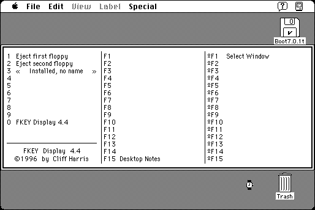

Download
FKEYDisplay.zip (8K) FKEY Display 4.4 repackaged into a zipped hfs disk image and checksum file. The disk image can be mounted with Mini vMac.
FKEYDisplay.sit.hqx (4K) FKEY Display 4.4 in the original format.
copyright: Cliff Harris
mod date: Jul 10, 1996
license: Freeware
from url :
Freeware Written by Cliff Harris
“FKEY that displays the FKEYs currently installed. Can display the normal 10 FKEYs or up to 40 FKEYs if extended FKEY numbering is used (works with Function Key Enabler).”

If you find these downloads useful, please consider helping the Gryphel Project, which hosts them.
Here are the md5 checksums for the downloads, signed with Gryphel Key 5:
--------- GRY SIGNED TEXT --------- c0173f03fa79d2f05b1b173c851ff411 FKEYDisplay.zip 3e14a82c98b5e07713cfa28a1922baba FKEYDisplay.sit.hqx ------- BEGIN GRY SIGNATURE ------- Gry/4Xa8CFcUzxdN/F00BHIvK4zXAuOlOvUjPI8BWbA+eupjlA3A3MaKrTmcSluA 7nyVMAGXQPZHEtszy+lvKwsO8r4dQoSXna2fP5Q8ogy0MA9qPMm2+T81NTXak2nh AozMMgdv6tsAqVvqjaqpBESuej7iVgo7omr2xT0kcJfZ9WqbkFFZCxvYXwiaeiO7 -------- END GRY SIGNATURE --------